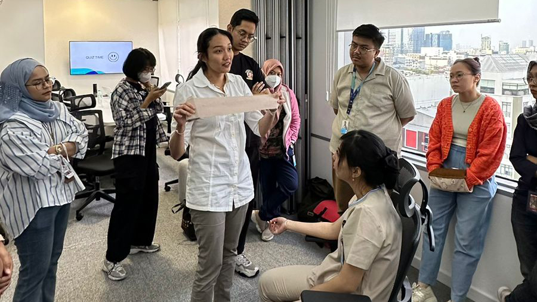

Basic Life Support and Trauma Training
GWS Medika (Member of Sinar Mas Group)
• These three sessions of training were attended by non-medical staff at GWS Medika. Each session consisted of 15-20 different participants from various departments in the head office.
• The sessions started with 30 minutes of presentations and 60 minutes of practical sessions.
• During the practical sessions, participants were divided into three groups, and there were three posts of different cases, which included basic life support and choking, trauma, and evacuation. Participants were given 20 minutes for each post. At the post, participants were demonstrated by the trainer and supervised to perform each first aid procedure.
• Their engagement was truly remarkable, and the positive feedback highlighted the value of the hands-on approach. This training significantly boosted their emergency response skills and their confidence in handling real-life situations. Overall, it was incredibly satisfying to see the participants leave with enhanced skills and a heightened sense of emergency preparedness.
Gallery
